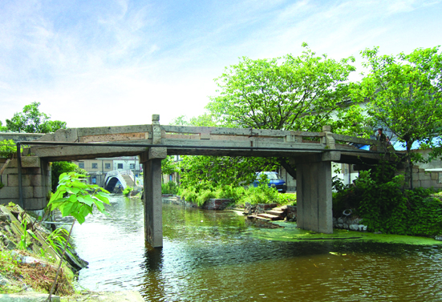

嘉兴市文物保护网 · 市级文物保护单位 · 2014-06-16 · 原文

麟湖桥位于嘉兴市秀洲区油车港镇栖真村3组，始建于何年不详，据油车港镇文化站杨跃兴先生编《悠悠水乡情----古桥篇》，现桥重建于道光二十二年（1842）。南北横跨池湾港，系三孔有栏梁式石板桥。全长19.41米，宽2.5米，桥底距水面高3.2米。桥面和桥柱均由4块石板组成，桥面两侧有石栏板、四端有方形望柱，北落坡石阶5级，南落坡石阶无存。东西有桥额“重建麟湖桥”，东侧桥联为“矢一念慈悲克成善举，愿千秋巩固永济行人”，西侧桥联为“七十岁康强功程独建，千万人来往利益常叨”。桥身、栏板等处刻有蟠螭纹、回纹、卷莲纹。该桥形制规模颇大，做工考究，桥纹饰雕工精美，是当地重要的历史建筑，具有较高的艺术和历史价值。2010年公布为嘉兴市级文物保护单位。